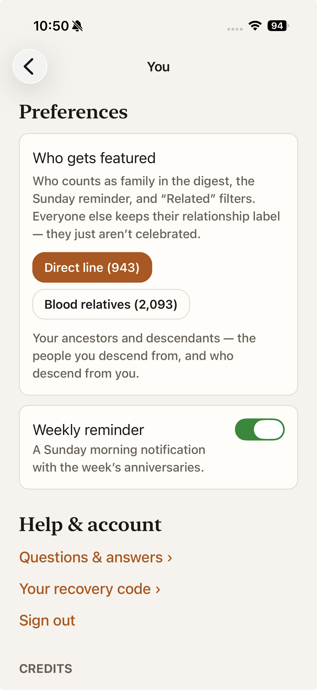

Six ideas repeat across every screen in Witness. Read them once here and the marks and lines everywhere else explain themselves.
Everything in Witness is seen from one vantage point: the home person — you, designated on the You tab (“You are Rufus Scott Howe”). Every relationship label (“your 7th great-grandmother”), every mark, and every “Related” filter is computed from that person outward. Change the home person and the whole tree re-orients.
The tree holds three kinds of people, seen from the home person:
The direct line — your ancestors and your descendants: the people you descend from, and who descend from you.
Blood relatives beyond the line — everyone who shares an ancestor with you without being on the line itself: cousins, great-aunts and great-uncles, and their families’ blood descendants.
Everyone else — people connected by marriage rather than blood: spouses who married into the family, in-laws, and their unrelated kin. They are full members of the tree — just not blood.
Wherever people are listed, a small mark next to a name places them at a glance:
⇅ Direct line. An up-and-down arrow — this person is on your vertical line, ancestor or descendant.
💧 Blood relative. A drop — blood, but off the line: a cousin, a great-aunt, a collateral branch.
No mark. Not a blood relative — connected by marriage. The absence is deliberate; an unmarked name is itself information.
The You tab has a setting with two choices: Direct line or Blood relatives. It answers exactly one question: who counts as family in the digest, the Sunday reminder, and “Related” filters — who gets celebrated.
It never hides anyone. Every query, the Family Stage, Tree Health, and every list still show the whole tree; an “Everyone” toggle on result screens makes that explicit. Everyone keeps their relationship label — they just aren’t featured.

1 2Under names throughout the app runs a quiet line of descent: “Daughter of William Towne and Joanna Blessing.” It names the person’s recorded parents — both when the record has both, one otherwise. A person with no parentage line simply has no parents recorded in the tree: the oldest generation, and most people who married in.
When Witness answers a question like “who was alive during this event,” each match is either documented (solid card border — the dates prove it) or probable (dashed border, labeled “probable” — inferred from partial dates). The headline count tells you how many of each. And one privacy rule holds everywhere: a person recorded as living keeps their story private — no AI biography, no featuring of their details.